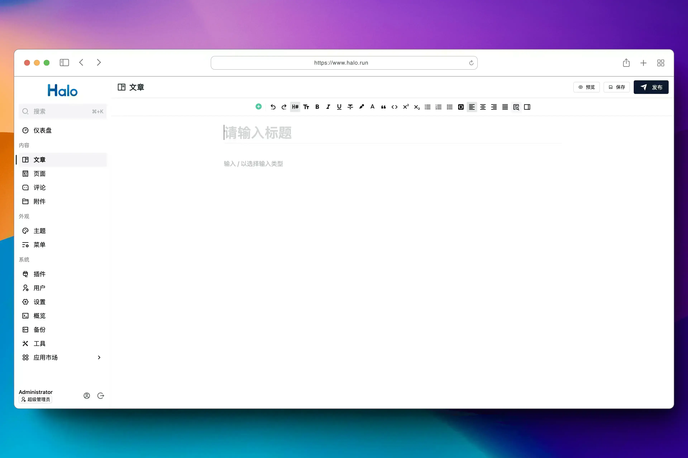
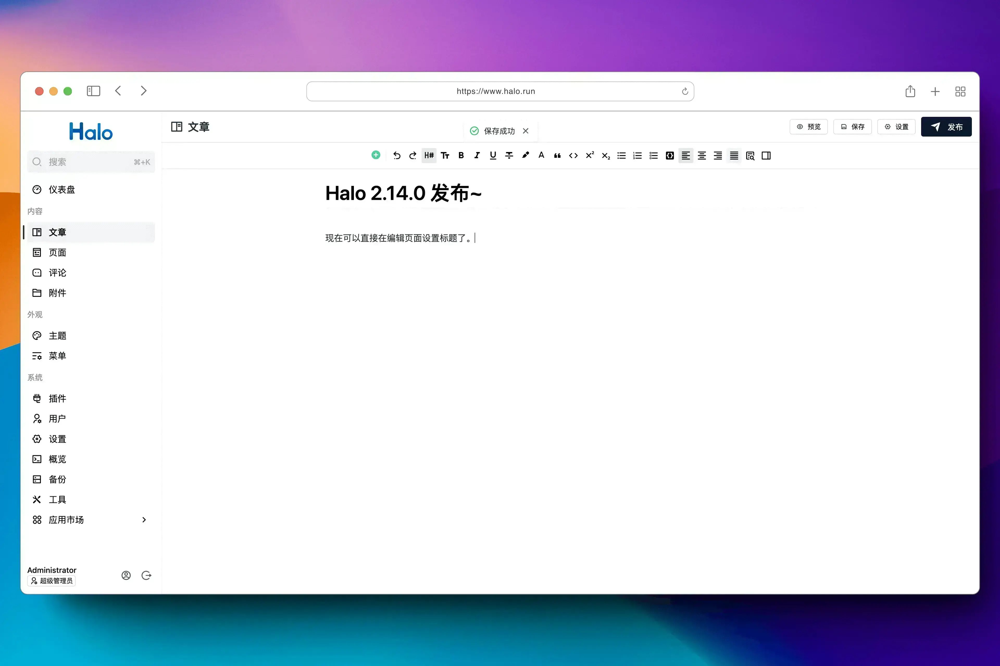
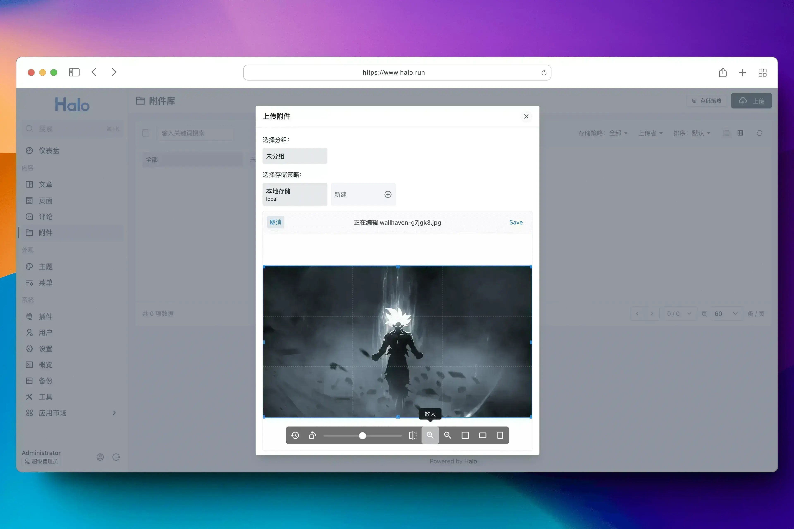
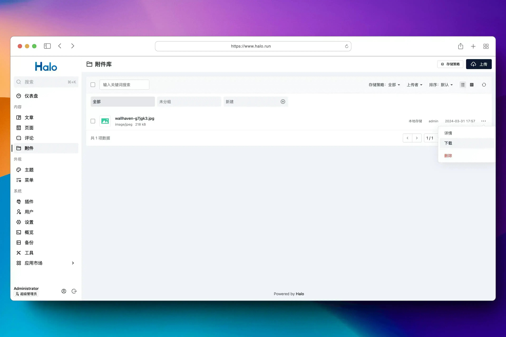
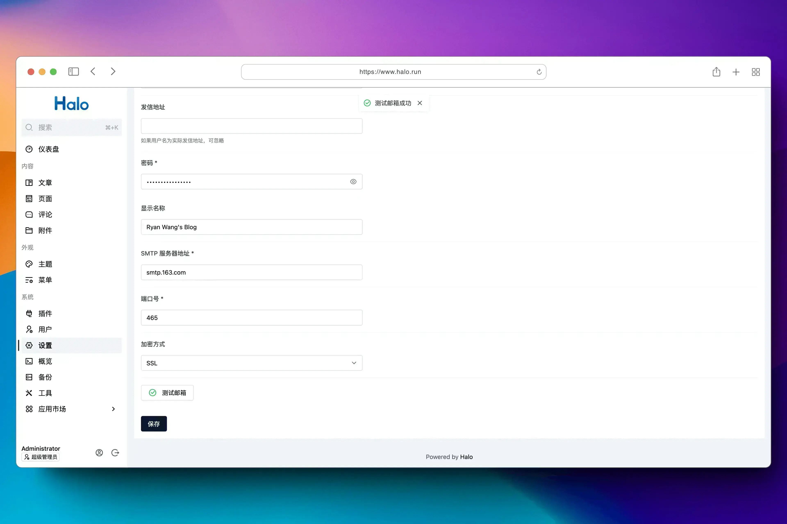

Ryan Wang Halo 是一款强大易用的开源建站工具，它让你无需太多的技术知识就可以快速搭建一个博客、网站或者内容管理系统。具备可插拔架构、主题套用、富文本编辑器等多重特性，支持用户根据自己的喜好选择不同类型的插件及主题模板来定制化自己的站点功能及外观。让内容创作和发布更加便捷生动。 截至目前（2024 年 Q1 季度），Halo 已经在 Docker Hub 获得了超过 210 万次下载，GitHub Star 数突破 31 k，并拥有一百多名社区贡献者。 2024 年 04 月 01 日，强大易用的开源建站工具 Halo 正式发布 2.14.0 版本。 在这个版本中，Halo 主要优化部分功能的使用体验，以及其他 30 多项功能优化和问题修复。 亮点更新 支持在编辑器输入文章标题 在 2.14 版本中，我们为文章编辑页面添加了文章标题的输入框，不再需要打开设置弹框去设置文章标题。这样可以得到更流畅的文章编辑体验。  附件上传支持编辑图片 在 2.14 版本中，我们为附件上传添加了图片编辑功能，可以实现在图片上传之前对图片进行放大缩小、旋转、裁剪等操作。  支持下载附件 在 2.14 版本中，我们为附件管理添加了附件下载的功能，不再需要将附件链接复制到浏览器然后再进行下载。  邮件通知配置支持测试 在之前的版本中，配置邮件通知之后只能去尝试触发邮件发送才能够知道是否配置成功，这可能带来一定的配置难度，在这个版本中，我们在邮件配置表单中添加了测试功能，可以在配置完成之后提前测试邮件配置是否存在问题。  此外，Halo 的表单支持验证之后，后续部分需要表单验证的插件也可以为此进行适配。比如 S3 对象存储插件的存储策略表单，完成适配之后就可以在配置存储策略的时候验证配置是否成功，不再需要手动去上传附件来验证配置。 完整更新日志 新特性 为默认编辑器添加标题输入框。 by @ruibaby in https://github.com/halo-dev/halo/pull/5465 为上传附件的组件添加基本的图片编辑功能。 by @ruibaby in https://github.com/halo-dev/halo/pull/5585 使用索引机制优化回复功能的查询以提高查询速度。 by @guqing in https://github.com/halo-dev/halo/pull/5497 使用索引机制优化评论数据查询以提高效率。 by @guqing in https://github.com/halo-dev/halo/pull/5453 为附件添加下载功能。 by @ruibaby in https://github.com/halo-dev/halo/pull/5496 附件管理的排序功能支持按照文件名排序。 by @ruibaby in https://github.com/halo-dev/halo/pull/5494 在邮件通知设置中增加了发送测试的功能。 by @LIlGG in https://github.com/halo-dev/halo/pull/5464 为富文本编辑器中的表格组件增加全选快捷键。 by @LIlGG in https://github.com/halo-dev/halo/pull/5443 优化标签关联的文章数量的更新方式以降低标签太多时对 CPU 的消耗。 by @guqing in https://github.com/halo-dev/halo/pull/5422 重构编辑器音频组件的上传逻辑，增加选择文件上传、上传进度条、取消、重试等机制。 by @LIlGG in https://github.com/halo-dev/halo/pull/5421 邮件通知配置添加发送邮件地址配置选项。 by @lingrottin in https://github.com/halo-dev/halo/pull/5351 功能优化 对 UI 的部分依赖进行分包处理。 by @ruibaby in https://github.com/halo-dev/halo/pull/5580 为 UC 端保存文章的操作添加重试机制，防止出现因为锁导致的保存失败问题。 by @ruibaby in https://github.com/halo-dev/halo/pull/5578 优化插件安装弹框组件的渲染时机，避免不必要的请求。 by @ruibaby in https://github.com/halo-dev/halo/pull/5577 编辑器的代码块支持选择 Dart 语言。 by @Sakura-LF in https://github.com/halo-dev/halo/pull/5531 有评论管理权限的用户发布的评论无需审核。 by @mashirot in https://github.com/halo-dev/halo/pull/5529 在搜索标签或分类的同时允许进行创建新的分类或标签。 by @LIlGG in https://github.com/halo-dev/halo/pull/5526 完善系统设置选项的帮助提示。 by @ruibaby in https://github.com/halo-dev/halo/pull/5516 主题端评论列表支持同时获得回复数据。 by @guqing in https://github.com/halo-dev/halo/pull/5505 移除默认富文本编辑器中链接的 nofollow 等属性，优化 SEO。 by @LIlGG in https://github.com/halo-dev/halo/pull/5477 简化部分确认框的标题。 by @ruibaby in https://github.com/halo-dev/halo/pull/5601 将默认存储策略模板的显示名称改为中文。 by @ruibaby in https://github.com/halo-dev/halo/pull/5626 默认隐藏文章设置等界面的自定义元数据表单。 by @ruibaby in https://github.com/halo-dev/halo/pull/5595 问题修复 修复当角色禁止访问 Console 后，无法正常重定向的问题。 by @LIlGG in https://github.com/halo-dev/halo/pull/5609 修复个人中心中用户无法修改文章发布时间的问题。 by @LIlGG in https://github.com/halo-dev/halo/pull/5596 修复在文章列表设置中可以无限点击上一个的问题。 by @LIlGG in https://github.com/halo-dev/halo/pull/5594 修复在个人中心中使用默认富文本编辑器的附件库而导致的报错问题。 by @LIlGG in https://github.com/halo-dev/halo/pull/5590 解决默认编辑器 getDraggable 在部分插件中失效的问题。 by @LIlGG in https://github.com/halo-dev/halo/pull/5570 修复文章编辑页面出现多个滚动条导致的页面高度样式问题。 by @LIlGG in https://github.com/halo-dev/halo/pull/5537 解决默认编辑器行内块元素下具有额外空行的问题。 by @LIlGG in https://github.com/halo-dev/halo/pull/5523 优化表单中复选框、单选框等组件的帮助文字样式。 by @LIlGG in https://github.com/halo-dev/halo/pull/5521 修复在某些情况下，打开文章预览或主题预览之后导致登录失效的问题。 by @ruibaby in https://github.com/halo-dev/halo/pull/5518 修复附件管理中的分组排序不固定的问题。 by @ruibaby in https://github.com/halo-dev/halo/pull/5495 修复仅拥有通知器配置权限时无法修改配置的问题。 by @guqing in https://github.com/halo-dev/halo/pull/5489 解决在默认富文本编辑器中当链接为纯数字时报错的问题。 by @LIlGG in https://github.com/halo-dev/halo/pull/5479 解决文章设置及页面设置中无法手动填写发布日期的问题。 by @LIlGG in https://github.com/halo-dev/halo/pull/5472 修复邮件通知中跳转到通知中心的链接错误的问题。 by @longjuan in https://github.com/halo-dev/halo/pull/5459 解决富文本编辑器中已上传的图片及视频会重复上传的问题。 by @LIlGG in https://github.com/halo-dev/halo/pull/5437 修复进入文章页面会偶现错误提示的问题。 by @LIlGG in https://github.com/halo-dev/halo/pull/5434 依赖更新 升级 OverlayScrollbars 的依赖版本至 2.5.0。 by @ruibaby in https://github.com/halo-dev/halo/pull/5471 升级依赖 PF4J 至 3.11.0。 by @JohnNiang in https://github.com/halo-dev/halo/pull/5462 升级依赖 Spring Boot 至 3.2.4。 by @JohnNiang in https://github.com/halo-dev/halo/pull/5568 文档 https://docs.halo.run 资源 适用于 2.0 的插件和主题可查阅： https://www.halo.run/store/apps https://github.com/halo-sigs/awesome-halo Full Changelog: halo-dev/halov2.13.0 → v2.14.0
Jordan-Li Ryan Wang 原来的问题解决了，是docker启动的时候-v的地址不对，现在遇到了新的问题，我原来的版本是halo2.2.0，升级2.14.0的过程中容器启动以后失败了，但回退到halo2.2.0以后还能正常使用
Jordan-Li Ryan Wang Caused by: io.r2dbc.spi.R2dbcNonTransientResourceException: Unsupported database file version or invalid file header in file "/root/.halo2/db/halo-next.mv.db" [90048-224]升级的过程中容器报错这个怎么解决呢
Jordan-Li Ryan Wang Caused by: io.r2dbc.spi.R2dbcNonTransientResourceException: Unsupported database file version or invalid file header in file "/root/.halo2/db/halo-next.mv.db" [90048-224]升级的过程中容器报错这个怎么解决呢
Ryan Wang Jordan-Li 这是 2.11 带来的问题，因为这个版本升级了 h2 数据库的版本，但是无法直接升级。这是推荐的升级过程：https://bbs.halo.run/d/4672-支持个人中心halo-2110-发布/23 此外，强烈建议不要在生产环境使用 h2 数据库。
18340057286 jar部署的 halo2.14.0 按照文档修新建了 application.yml 并使用mysql数据库，在测试运行时查看数据库是mysql ，但在正式运行后 数据库又变回了 h2 是不是没有运行时没有按照新建的application.yml